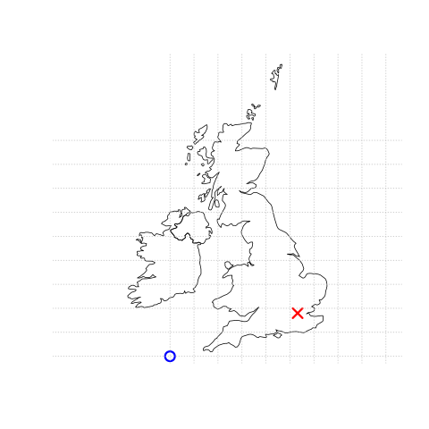
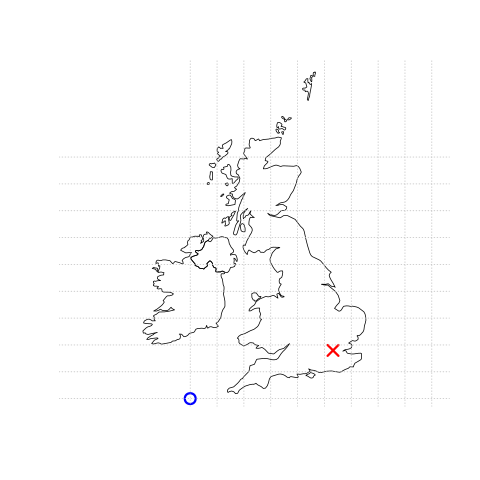

2 Geographic data in R
Prerequisites
This is the first practical chapter of the book, and therefore it comes with some software requirements. You need access to a computer with a recent version of R installed (R 4.2.0 or a later version). We recommend not only reading the prose but also running the code in each chapter to build your geocomputational skills.
To keep track of your learning journey, it may be worth starting by creating a new folder on your computer to save your R scripts, outputs and other things related to Geocomputation with R as you go. You can also download or clone the source code underlying the book to support your learning. We strongly recommend installing an integrated development environment (IDE) such as RStudio (recommended for most people) or VS Code when writing/running/testing R code.6
If you are new to R, we recommend following introductory R resources such as Hands on Programming with R by Garrett Grolemund or an Introduction to R by Claudia Engel before you dive into Geocomputation with R code.
Organize your work (e.g., with RStudio projects) and give scripts sensible names such as chapter-02-notes.R to document the code as you learn.
After you have got a good set-up, it’s time to run some code! Unless you already have these packages installed, the first thing to do is to install foundational R packages used in this chapter, with the following commands:7
install.packages("sf")
install.packages("terra")
install.packages("spData")
install.packages("spDataLarge", repos = "https://nowosad.r-universe.dev")The packages needed to reproduce Part 1 of this book can be installed with the following command: remotes::install_github("geocompr/geocompkg").
This command uses the function install_packages() from the remotes package to install source code hosted on the GitHub code hosting, version and collaboration platform.
The following command will install all dependencies required to reproduce the entire book (warning: this may take several minutes): remotes::install_github("geocompr/geocompkg", dependencies = TRUE)
The packages needed to run the code presented in this chapter can be ‘loaded’ (technically they are attached) with the library() function as follows:
library(sf) # classes and functions for vector data
#> Linking to GEOS 3.10.2, GDAL 3.4.1, PROJ 8.2.1; sf_use_s2() is TRUEThe output from library(sf) reports which versions of key geographic libraries such as GEOS the package is using, as outlined in Section 2.2.1.
The other packages that were installed contain data that will be used in the book:
library(spData) # load geographic data
library(spDataLarge) # load larger geographic data2.1 Introduction
This chapter will provide brief explanations of the fundamental geographic data models: vector and raster. We will introduce the theory behind each data model and the disciplines in which they predominate, before demonstrating their implementation in R.
The vector data model represents the world using points, lines and polygons. These have discrete, well-defined borders, meaning that vector datasets usually have a high level of precision (but not necessarily accuracy as we will see in Section 2.5). The raster data model divides the surface up into cells of constant size. Raster datasets are the basis of background images used in web-mapping and have been a vital source of geographic data since the origins of aerial photography and satellite-based remote sensing devices. Rasters aggregate spatially specific features to a given resolution, meaning that they are consistent over space and scalable (many worldwide raster datasets are available).
Which to use? The answer likely depends on your domain of application:
- Vector data tends to dominate the social sciences because human settlements tend to have discrete borders
- Raster dominates many environmental sciences because of the reliance on remote sensing data
There is much overlap in some fields and raster and vector datasets can be used together: ecologists and demographers, for example, commonly use both vector and raster data. Furthermore, it is possible to convert between the two forms (see Section 6). Whether your work involves more use of vector or raster datasets, it is worth understanding the underlying data model before using them, as discussed in subsequent chapters. This book uses sf and terra packages to work with vector data and raster datasets, respectively.
2.2 Vector data
vector class (note the monospace font) in R.
The former is a data model, the latter is an R class just like data.frame and matrix.
Still, there is a link between the two: the spatial coordinates which are at the heart of the geographic vector data model can be represented in R using vector objects.
The geographic vector data model is based on points located within a coordinate reference system (CRS). Points can represent self-standing features (e.g., the location of a bus stop) or they can be linked together to form more complex geometries such as lines and polygons. Most point geometries contain only two dimensions (3-dimensional CRSs contain an additional \(z\) value, typically representing height above sea level).
In this system London, for example, can be represented by the coordinates c(-0.1, 51.5).
This means that its location is -0.1 degrees east and 51.5 degrees north of the origin.
The origin in this case is at 0 degrees longitude (the Prime Meridian) and 0 degree latitude (the Equator) in a geographic (‘lon/lat’) CRS (Figure 2.1, left panel).
The same point could also be approximated in a projected CRS with ‘Easting/Northing’ values of c(530000, 180000) in the British National Grid, meaning that London is located 530 km East and 180 km North of the \(origin\) of the CRS.
This can be verified visually: slightly more than 5 ‘boxes’ — square areas bounded by the gray grid lines 100 km in width — separate the point representing London from the origin (Figure 2.1, right panel).
The location of National Grid’s origin, in the sea beyond South West Peninsular, ensures that most locations in the UK have positive Easting and Northing values.8 There is more to CRSs, as described in Sections 2.4 and 7 but, for the purposes of this section, it is sufficient to know that coordinates consist of two numbers representing distance from an origin, usually in \(x\) then \(y\) dimensions.
 
FIGURE 2.1: Illustration of vector (point) data in which location of London (the red X) is represented with reference to an origin (the blue circle). The left plot represents a geographic CRS with an origin at 0° longitude and latitude. The right plot represents a projected CRS with an origin located in the sea west of the South West Peninsula.
sf provides classes for geographic vector data and a consistent command-line interface to important low level libraries for geocomputation:
- GDAL, for reading, writing and manipulating a wide range of geographic data formats, covered in Chapter 8
- PROJ, a powerful library for coordinate system transformations, which underlies the content covered in Chapter 7
- GEOS, a planar geometry engine for operations such as calculating buffers and centroids on data with a projected CRS, covered in Chapter 5
- S2, a spherical geometry engine written in C++ developed by Google, via the s2 package, covered in Section 2.2.9 below and in Chapter 7
Information about these interfaces is printed by sf the first time the package is loaded: the message Linking to GEOS 3.8.0, GDAL 3.0.4, PROJ 6.3.1; sf_use_s2() is TRUE that appears below the library(sf) command at the beginning of this chapter tells us the versions of linked GEOS, GDAL and PROJ libraries (these vary between computers and over time) and whether or not the S2 interface is turned on.
Nowadays, we take it for granted, however, only the tight integration with different geographic libraries makes reproducible geocomputation possible in the first place.
A neat feature of sf is that you can change the default geometry engine used on unprojected data: ‘switching off’ S2 can be done with the command sf::sf_use_s2(FALSE), meaning that the planar geometry engine GEOS will be used by default for all geometry operations, including geometry operations on unprojected data.
As we will see in Section 2.2.9, planar geometry is based on 2 dimensional space.
Planar geometry engines such as GEOS assume ‘flat’ (projected) coordinates while spherical geometry engines such as S2 assume unprojected (lon/lat) coordinates.
This section introduces sf classes in preparation for subsequent chapters (Chapters 5 and 8 cover the GEOS and GDAL interface, respectively).
2.2.1 An introduction to simple features
Simple features is an open standard developed and endorsed by the Open Geospatial Consortium (OGC), a not-for-profit organization whose activities we will revisit in a later chapter (in Section 8.5). Simple Features is a hierarchical data model that represents a wide range of geometry types. Of 18 geometry types supported by the specification, only 7 are used in the vast majority of geographic research (see Figure 2.2); these core geometry types are fully supported by the R package sf (Pebesma 2018).9

FIGURE 2.2: Simple feature types fully supported by sf.
sf can represent all common vector geometry types (raster data classes are not supported by sf): points, lines, polygons and their respective ‘multi’ versions (which group together features of the same type into a single feature). sf also supports geometry collections, which can contain multiple geometry types in a single object. sf provides the same functionality (and more) previously provided in three packages — sp for data classes (Pebesma and Bivand 2018), rgdal for data read/write via an interface to GDAL and PROJ (Bivand, Keitt, and Rowlingson 2018) and rgeos for spatial operations via an interface to GEOS (Bivand and Rundel 2018).
To re-iterate the message from Chapter 1, geographic R packages have a long history of interfacing with lower level libraries, and sf continues this tradition with a unified interface to recent versions GEOS for geometry operations, the GDAL library for reading and writing geographic data files, and the PROJ library for representing and transforming projected coordinate reference systems.
Through s2,
“an R interface to Google’s spherical geometry library s2, sf also has access to fast and accurate”measurements and operations on non-planar geometries” (Bivand 2021).
Since sf version 1.0.0, launched in June 2021, s2 functionality is now used by default on geometries with geographic (longitude/latitude) coordinate systems, a unique feature of sf that differs from spatial libraries that only support GEOS for geometry operations such as the Python package GeoPandas.
We will discuss s2 in subsequent chapters.
sf’s ability to integrate multiple powerful libraries for geocomputation into a single framework is a notable achievement that reduces ‘barriers to entry’ into the world of reproducible geographic data analysis with high-performance libraries. sf’s functionality is well documented on its website at r-spatial.github.io/sf/ which contains 7 vignettes. These can be viewed offline as follows:
vignette(package = "sf") # see which vignettes are available
vignette("sf1") # an introduction to the packageAs the first vignette explains, simple feature objects in R are stored in a data frame, with geographic data occupying a special column, usually named ‘geom’ or ‘geometry’.
We will use the world dataset provided by spData, loaded at the beginning of this chapter, to show what sf objects and how they work.
world is an ‘sf data frame’ containing spatial and attribute columns, the names of which are returned by the function names() (the last column in this example contains the geographic information):
class(world)
#> [1] "sf" "tbl_df" "tbl" "data.frame"
names(world)
#> [1] "iso_a2" "name_long" "continent" "region_un" "subregion" "type"
#> [7] "area_km2" "pop" "lifeExp" "gdpPercap" "geom"The contents of this geom column give sf objects their spatial powers: world$geom is a ‘list column’ that contains all the coordinates of the country polygons.
sf objects can be plotted quickly with the base R function plot();
the following command creates Figure 2.3.
plot(world)
FIGURE 2.3: A spatial plot of the world using the sf package, with a facet for each attribute.
Note that instead of creating a single map by default for geographic objects, as most GIS programs do, plot()ing sf objects results in a map for each variable in the datasets.
This behavior can be useful for exploring the spatial distribution of different variables and is discussed further in Section 2.2.3.
More broadly, treating geographic objects as regular data frames with spatial powers has many advantages, especially if you are already used to working with data frames.
The commonly used summary() function, for example, provides a useful overview of the variables within the world object.
summary(world["lifeExp"])
#> lifeExp geom
#> Min. :50.6 MULTIPOLYGON :177
#> 1st Qu.:65.0 epsg:4326 : 0
#> Median :72.9 +proj=long...: 0
#> Mean :70.9
#> 3rd Qu.:76.8
#> Max. :83.6
#> NA's :10Although we have only selected one variable for the summary() command, it also outputs a report on the geometry.
This demonstrates the ‘sticky’ behavior of the geometry columns of sf objects, meaning the geometry is kept unless the user deliberately removes them, as we’ll see in Section 3.2.
The result provides a quick summary of both the non-spatial and spatial data contained in world: the mean average life expectancy is 71 years (ranging from less than 51 to more than 83 years with a median of 73 years) across all countries.
MULTIPOLYGON in the summary output above refers to the geometry type of features (countries) in the world object.
This representation is necessary for countries with islands such as Indonesia and Greece.
Other geometry types are described in Section 2.2.4.
It is worth taking a deeper look at the basic behavior and contents of this simple feature object, which can usefully be thought of as a ‘spatial data frame’.
sf objects are easy to subset: the code below shows how to return an object containing only the first two rows and the first three columns of the world object.
The output shows two major differences compared with a regular data.frame: the inclusion of additional geographic metadata (Geometry type, Dimension, Bounding box and coordinate reference system information on the line beginning Geodetic CRS CRS information), and the presence of a ‘geometry column’, here named geom:
world_mini = world[1:2, 1:3]
world_mini
#> Simple feature collection with 2 features and 3 fields
#> Geometry type: MULTIPOLYGON
#> Dimension: XY
#> Bounding box: xmin: -180 ymin: -18.3 xmax: 180 ymax: -0.95
#> Geodetic CRS: WGS 84
#> # A tibble: 2 × 4
#> iso_a2 name_long continent geom
#> <chr> <chr> <chr> <MULTIPOLYGON [°]>
#> 1 FJ Fiji Oceania (((-180 -16.6, -180 -16.5, -180 -16, -180 -16.1, -…
#> 2 TZ Tanzania Africa (((33.9 -0.95, 31.9 -1.03, 30.8 -1.01, 30.4 -1.13,…All this may seem rather complex, especially for a class system that is supposed to be ‘simple’! However, there are good reasons for organizing things this way and using sf to work with vector geographic datasets.
Before describing each geometry type that the sf package supports, it is worth taking a step back to understand the building blocks of sf objects.
Section 2.2.5 shows how simple features objects are data frames, with special geometry columns.
These spatial columns are often called geom or geometry: world$geom refers to the spatial element of the world object described above.
These geometry columns are ‘list columns’ of class sfc (see Section 2.2.7).
In turn, sfc objects are composed of one or more objects of class sfg: simple feature geometries that we describe in Section 2.2.6.
To understand how the spatial components of simple features work, it is vital to understand simple feature geometries.
For this reason we cover each currently supported simple features geometry type in Section 2.2.4 before moving on to describe how these can be represented in R using sf objects, which are based on sfg and sfc objects.
= to create a new object called world_mini in the command world_mini = world[1:2, 1:3].
This is called assignment.
An equivalent command to achieve the same result is world_mini <- world[1:2, 1:3].
Although ‘arrow assigment’ is more commonly used, we use ‘equals assignment’ because it’s slightly faster to type and easier to teach due to compatibility with commonly used languages such as Python and JavaScript.
Which to use is largely a matter of preference as long as you’re consistent (packages such as styler can be used to change style).
2.2.2 Why simple features?
Simple features is a widely supported data model that underlies data structures in many GIS applications including QGIS and PostGIS. A major advantage of this is that using the data model ensures your work is cross-transferable to other set-ups, for example importing from and exporting to spatial databases.
A more specific question from an R perspective is “why use the sf package when sp is already tried and tested”? There are many reasons (linked to the advantages of the simple features model):
- Fast reading and writing of data
- Enhanced plotting performance
- sf objects can be treated as data frames in most operations
-
sf function names are relatively consistent and intuitive (all begin with
st_) -
sf functions can be combined with the
|>operator and works well with the tidyverse collection of R packages.
sf’s support for tidyverse packages is exemplified by read_sf(), a function for importing geographic vector data covered in detail in Section 8.6.1.
Unlike the function st_read(), which returns attributes stored in a base R data.frame (and which emits verbose messages, not shown in the code chunk below), read_sf() silently returns data as a tidyverse tibble.
This is demonstrated below:
world_dfr = st_read(system.file("shapes/world.shp", package = "spData"))
#> Reading layer `world' from data source
#> `/usr/local/lib/R/site-library/spData/shapes/world.shp' using driver `ESRI Shapefile'
#> Simple feature collection with 177 features and 10 fields
#> Geometry type: MULTIPOLYGON
#> Dimension: XY
#> Bounding box: xmin: -180 ymin: -89.9 xmax: 180 ymax: 83.6
#> Geodetic CRS: WGS 84
world_tbl = read_sf(system.file("shapes/world.shp", package = "spData"))
class(world_dfr)
#> [1] "sf" "data.frame"
class(world_tbl)
#> [1] "sf" "tbl_df" "tbl" "data.frame"As described in Chapter 3, which shows how to manipulate sf objects with tidyverse functions, sf is now the go-to package for analysis of spatial vector data in R.
spatstat, a package ecosystem which provides numerous functions for spatial statistics, and terra both have vector geographic data classes, but neither have the same level of uptake as sf does for working with vector data.
Many popular packages build on sf, as shown by the rise in its popularity in terms of number of downloads per day, as shown in Section 1.4 in the previous chapter.
Transitioning established packages and workflows away from legacy packages rgeos and rgdal takes time (Bivand 2021), but the process was given a sense of urgency by messages printed when they were loaded, which state that they “will be retired by the end of 2023”.
This means that anyone still using these packages should “transition to sf/stars/terra functions using GDAL and PROJ at your earliest convenience”.
In other words, sf is future proof but sp is not.
For workflows that depend on the legacy class system, sf objects can be converted from and to the Spatial class of the sp package as follows:
2.2.3 Basic map making
Basic maps are created in sf with plot().
By default this creates a multi-panel plot, one sub-plot for each variable of the object, as illustrated in the left-hand panel in Figure 2.4.
A legend or ‘key’ with a continuous color is produced if the object to be plotted has a single variable (see the right-hand panel).
Colors can also be set with col =, although this will not create a continuous palette or a legend.


FIGURE 2.4: Plotting with sf, with multiple variables (left) and a single variable (right).
Plots are added as layers to existing images by setting add = TRUE.10
To demonstrate this, and to provide a insight into the contents of Chapters 3 and 4 on attribute and spatial data operations, the subsequent code chunk filters countries in Asia and combines them into a single feature:
world_asia = world[world$continent == "Asia", ]
asia = st_union(world_asia)We can now plot the Asian continent over a map of the world.
Note that the first plot must only have one facet for add = TRUE to work.
If the first plot has a key, reset = FALSE must be used:

FIGURE 2.5: A plot of Asia added as a layer on top of countries worldwide.
Adding layers in this way can be used to verify the geographic correspondence between layers:
the plot() function is fast to execute and requires few lines of code, but does not create interactive maps with a wide range of options.
For more advanced map making we recommend using dedicated visualization packages such as tmap (see Chapter 9).
There are various ways to modify maps with sf’s plot() method.
Because sf extends base R plotting methods plot()’s arguments such as main = (which specifies the title of the map) work with sf objects (see ?graphics::plot and ?par).11
Figure 2.6 illustrates this flexibility by overlaying circles, whose diameters (set with cex =) represent country populations, on a map of the world.
An unprojected version of this figure can be created with the following commands (see exercises at the end of this chapter and the script 02-contplot.R to reproduce Figure 2.6):
plot(world["continent"], reset = FALSE)
cex = sqrt(world$pop) / 10000
world_cents = st_centroid(world, of_largest = TRUE)
plot(st_geometry(world_cents), add = TRUE, cex = cex)
FIGURE 2.6: Country continents (represented by fill color) and 2015 populations (represented by circles, with area proportional to population).
The code above uses the function st_centroid() to convert one geometry type (polygons) to another (points) (see Chapter 5), the aesthetics of which are varied with the cex argument.
sf’s plot method also has arguments specific to geographic data. expandBB, for example, can be used to plot an sf object in context:
it takes a numeric vector of length four that expands the bounding box of the plot relative to zero in the following order: bottom, left, top, right.
This is used to plot India in the context of its giant Asian neighbors, with an emphasis on China to the east, in the following code chunk, which generates Figure 2.7 (see exercises below on adding text to plots):12
india = world[world$name_long == "India", ]
plot(st_geometry(india), expandBB = c(0, 0.2, 0.1, 1), col = "gray", lwd = 3)
plot(st_geometry(world_asia), add = TRUE)
FIGURE 2.7: India in context, demonstrating the expandBB argument.
Note the use of lwd to emphasize India in the plotting code.
See Section 9.6 for other visualization techniques for representing a range of geometry types, the subject of the next section.
2.2.4 Geometry types
Geometries are the basic building blocks of simple features.
Simple features in R can take on one of the 18 geometry types supported by the sf package.
In this chapter we will focus on the seven most commonly used types: POINT, LINESTRING, POLYGON, MULTIPOINT, MULTILINESTRING, MULTIPOLYGON and GEOMETRYCOLLECTION.
Find the whole list of possible feature types in the PostGIS manual.
Generally, well-known binary (WKB) or well-known text (WKT) are the standard encoding for simple feature geometries. WKB representations are usually hexadecimal strings easily readable for computers. This is why GIS and spatial databases use WKB to transfer and store geometry objects. WKT, on the other hand, is a human-readable text markup description of simple features. Both formats are exchangeable, and if we present one, we will naturally choose the WKT representation.
The basis for each geometry type is the point.
A point is simply a coordinate in 2D, 3D or 4D space (see vignette("sf1") for more information) such as (see left panel in Figure 2.8):
POINT (5 2)
A linestring is a sequence of points with a straight line connecting the points, for example (see middle panel in Figure 2.8):
LINESTRING (1 5, 4 4, 4 1, 2 2, 3 2)
A polygon is a sequence of points that form a closed, non-intersecting ring. Closed means that the first and the last point of a polygon have the same coordinates (see right panel in Figure 2.8).13
- Polygon without a hole:
POLYGON ((1 5, 2 2, 4 1, 4 4, 1 5))

FIGURE 2.8: Illustration of point, linestring and polygon geometries.
So far we have created geometries with only one geometric entity per feature. sf also allows multiple geometries of a single type to exist within a single feature within “multi” version of each geometry type:
- Multipoint:
MULTIPOINT (5 2, 1 3, 3 4, 3 2) - Multilinestring:
MULTILINESTRING ((1 5, 4 4, 4 1, 2 2, 3 2), (1 2, 2 4)) - Multipolygon:
MULTIPOLYGON (((1 5, 2 2, 4 1, 4 4, 1 5), (0 2, 1 2, 1 3, 0 3, 0 2)))

FIGURE 2.9: Illustration of multi* geometries.
Finally, a geometry collection can contain any combination of geometries including (multi)points and linestrings (see Figure 2.10):
- Geometry collection:
GEOMETRYCOLLECTION (MULTIPOINT (5 2, 1 3, 3 4, 3 2), LINESTRING (1 5, 4 4, 4 1, 2 2, 3 2))

FIGURE 2.10: Illustration of a geometry collection.
2.2.5 The sf class
Simple features consist of two main parts: geometries and non-geographic attributes.
Figure 2.11 shows how an sf object is created – geometries come from an sfc object, while attributes are taken from a data.frame or tibble.
To learn more about building sf geometries from scratch read the following Sections 2.2.6 and 2.2.7.

FIGURE 2.11: Building blocks of sf objects.
Non-geographic attributes represent the name of the feature or other attributes such as measured values, groups, and other things.
To illustrate attributes, we will represent a temperature of 25°C in London on June 21st, 2017.
This example contains a geometry (the coordinates), and three attributes with three different classes (place name, temperature and date).14
Objects of class sf represent such data by combining the attributes (data.frame) with the simple feature geometry column (sfc).
They are created with st_sf() as illustrated below, which creates the London example described above:
lnd_point = st_point(c(0.1, 51.5)) # sfg object
lnd_geom = st_sfc(lnd_point, crs = "EPSG:4326") # sfc object
lnd_attrib = data.frame( # data.frame object
name = "London",
temperature = 25,
date = as.Date("2017-06-21")
)
lnd_sf = st_sf(lnd_attrib, geometry = lnd_geom) # sf objectWhat just happened? First, the coordinates were used to create the simple feature geometry (sfg).
Second, the geometry was converted into a simple feature geometry column (sfc), with a CRS.
Third, attributes were stored in a data.frame, which was combined with the sfc object with st_sf().
This results in an sf object, as demonstrated below (some output is omitted):
lnd_sf
#> Simple feature collection with 1 features and 3 fields
#> ...
#> name temperature date geometry
#> 1 London 25 2017-06-21 POINT (0.1 51.5)
class(lnd_sf)
#> [1] "sf" "data.frame"The result shows that sf objects actually have two classes, sf and data.frame.
Simple features are simply data frames (square tables), but with spatial attributes stored in a list column, usually called geometry, as described in Section 2.2.1.
This duality is central to the concept of simple features:
most of the time a sf can be treated as and behaves like a data.frame.
Simple features are, in essence, data frames with a spatial extension.
2.2.6 Simple feature geometries (sfg)
The sfg class represents the different simple feature geometry types in R: point, linestring, polygon (and their ‘multi’ equivalents, such as multipoints) or geometry collection.
Usually you are spared the tedious task of creating geometries on your own since you can simply import an already existing spatial file.
However, there are a set of functions to create simple feature geometry objects (sfg) from scratch if needed.
The names of these functions are simple and consistent, as they all start with the st_ prefix and end with the name of the geometry type in lowercase letters:
- A point:
st_point() - A linestring:
st_linestring() - A polygon:
st_polygon() - A multipoint:
st_multipoint() - A multilinestring:
st_multilinestring() - A multipolygon:
st_multipolygon() - A geometry collection:
st_geometrycollection()
sfg objects can be created from three base R data types:
- A numeric vector: a single point
- A matrix: a set of points, where each row represents a point, a multipoint or linestring
- A list: a collection of objects such as matrices, multilinestrings or geometry collections
The function st_point() creates single points from numeric vectors:
st_point(c(5, 2)) # XY point
#> POINT (5 2)
st_point(c(5, 2, 3)) # XYZ point
#> POINT Z (5 2 3)
st_point(c(5, 2, 1), dim = "XYM") # XYM point
#> POINT M (5 2 1)
st_point(c(5, 2, 3, 1)) # XYZM point
#> POINT ZM (5 2 3 1)The results show that XY (2D coordinates), XYZ (3D coordinates) and XYZM (3D with an additional variable, typically measurement accuracy) point types are created from vectors of length 2, 3, and 4, respectively.
The XYM type must be specified using the dim argument (which is short for dimension).
By contrast, use matrices in the case of multipoint (st_multipoint()) and linestring (st_linestring()) objects:
# the rbind function simplifies the creation of matrices
## MULTIPOINT
multipoint_matrix = rbind(c(5, 2), c(1, 3), c(3, 4), c(3, 2))
st_multipoint(multipoint_matrix)
#> MULTIPOINT ((5 2), (1 3), (3 4), (3 2))
## LINESTRING
linestring_matrix = rbind(c(1, 5), c(4, 4), c(4, 1), c(2, 2), c(3, 2))
st_linestring(linestring_matrix)
#> LINESTRING (1 5, 4 4, 4 1, 2 2, 3 2)Finally, use lists for the creation of multilinestrings, (multi-)polygons and geometry collections:
## POLYGON
polygon_list = list(rbind(c(1, 5), c(2, 2), c(4, 1), c(4, 4), c(1, 5)))
st_polygon(polygon_list)
#> POLYGON ((1 5, 2 2, 4 1, 4 4, 1 5))
## POLYGON with a hole
polygon_border = rbind(c(1, 5), c(2, 2), c(4, 1), c(4, 4), c(1, 5))
polygon_hole = rbind(c(2, 4), c(3, 4), c(3, 3), c(2, 3), c(2, 4))
polygon_with_hole_list = list(polygon_border, polygon_hole)
st_polygon(polygon_with_hole_list)
#> POLYGON ((1 5, 2 2, 4 1, 4 4, 1 5), (2 4, 3 4, 3 3, 2 3, 2 4))
## MULTILINESTRING
multilinestring_list = list(rbind(c(1, 5), c(4, 4), c(4, 1), c(2, 2), c(3, 2)),
rbind(c(1, 2), c(2, 4)))
st_multilinestring((multilinestring_list))
#> MULTILINESTRING ((1 5, 4 4, 4 1, 2 2, 3 2), (1 2, 2 4))
## MULTIPOLYGON
multipolygon_list = list(list(rbind(c(1, 5), c(2, 2), c(4, 1), c(4, 4), c(1, 5))),
list(rbind(c(0, 2), c(1, 2), c(1, 3), c(0, 3), c(0, 2))))
st_multipolygon(multipolygon_list)
#> MULTIPOLYGON (((1 5, 2 2, 4 1, 4 4, 1 5)), ((0 2, 1 2, 1 3, 0 3, 0 2)))
## GEOMETRYCOLLECTION
geometrycollection_list = list(st_multipoint(multipoint_matrix),
st_linestring(linestring_matrix))
st_geometrycollection(geometrycollection_list)
#> GEOMETRYCOLLECTION (MULTIPOINT (5 2, 1 3, 3 4, 3 2),
#> LINESTRING (1 5, 4 4, 4 1, 2 2, 3 2))2.2.7 Simple feature columns (sfc)
One sfg object contains only a single simple feature geometry.
A simple feature geometry column (sfc) is a list of sfg objects, which is additionally able to contain information about the coordinate reference system in use.
For instance, to combine two simple features into one object with two features, we can use the st_sfc() function.
This is important since sfc represents the geometry column in sf data frames:
# sfc POINT
point1 = st_point(c(5, 2))
point2 = st_point(c(1, 3))
points_sfc = st_sfc(point1, point2)
points_sfc
#> Geometry set for 2 features
#> Geometry type: POINT
#> Dimension: XY
#> Bounding box: xmin: 1 ymin: 2 xmax: 5 ymax: 3
#> CRS: NA
#> POINT (5 2)
#> POINT (1 3)In most cases, an sfc object contains objects of the same geometry type.
Therefore, when we convert sfg objects of type polygon into a simple feature geometry column, we would also end up with an sfc object of type polygon, which can be verified with st_geometry_type().
Equally, a geometry column of multilinestrings would result in an sfc object of type multilinestring:
# sfc POLYGON
polygon_list1 = list(rbind(c(1, 5), c(2, 2), c(4, 1), c(4, 4), c(1, 5)))
polygon1 = st_polygon(polygon_list1)
polygon_list2 = list(rbind(c(0, 2), c(1, 2), c(1, 3), c(0, 3), c(0, 2)))
polygon2 = st_polygon(polygon_list2)
polygon_sfc = st_sfc(polygon1, polygon2)
st_geometry_type(polygon_sfc)
#> [1] POLYGON POLYGON
#> 18 Levels: GEOMETRY POINT LINESTRING POLYGON MULTIPOINT ... TRIANGLE
# sfc MULTILINESTRING
multilinestring_list1 = list(rbind(c(1, 5), c(4, 4), c(4, 1), c(2, 2), c(3, 2)),
rbind(c(1, 2), c(2, 4)))
multilinestring1 = st_multilinestring((multilinestring_list1))
multilinestring_list2 = list(rbind(c(2, 9), c(7, 9), c(5, 6), c(4, 7), c(2, 7)),
rbind(c(1, 7), c(3, 8)))
multilinestring2 = st_multilinestring((multilinestring_list2))
multilinestring_sfc = st_sfc(multilinestring1, multilinestring2)
st_geometry_type(multilinestring_sfc)
#> [1] MULTILINESTRING MULTILINESTRING
#> 18 Levels: GEOMETRY POINT LINESTRING POLYGON MULTIPOINT ... TRIANGLEIt is also possible to create an sfc object from sfg objects with different geometry types:
# sfc GEOMETRY
point_multilinestring_sfc = st_sfc(point1, multilinestring1)
st_geometry_type(point_multilinestring_sfc)
#> [1] POINT MULTILINESTRING
#> 18 Levels: GEOMETRY POINT LINESTRING POLYGON MULTIPOINT ... TRIANGLEAs mentioned before, sfc objects can additionally store information on the coordinate reference systems (CRS).
The default value is NA (Not Available), as can be verified with st_crs():
st_crs(points_sfc)
#> Coordinate Reference System: NAAll geometries in sfc objects must have the same CRS.
A CRS can be specified with the crs argument of st_sfc() (or st_sf()), which takes a CRS identifier provided as a text string, such as crs = "EPSG:4326" (see Section 7.2 for other CRS representations and details on what this means).
2.2.8 The sfheaders package
sfheaders is an R package that speeds-up the construction, conversion and manipulation of sf objects (Cooley 2020).
It focuses on building sf objects from vectors, matrices and data frames, rapidly, and without depending on the sf library; and exposing its underlying C++ code through header files (hence the name, sfheaders).
This approach enables others to extend it using compiled and fast-running code.
Every core sfheaders function has a corresponding C++ implementation, as described in the Cpp vignette.
For most people, the R functions will be more than sufficient to benefit from the computational speed of the package.
sfheaders was developed separately from sf, but aims to be fully compatible, creating valid sf objects of the type described in preceding sections.
The simplest use-case for sfheaders is demonstrated in the code chunks below with examples of building sfg, sfc, and sf objects showing:
- A vector converted to
sfg_POINT - A matrix converted to
sfg_LINESTRING - A data frame converted to
sfg_POLYGON
We will start by creating the simplest possible sfg object, a single coordinate pair, assigned to a vector named v:
v_sfg_sfh # printing without sf loaded
#> [,1] [,2]
#> [1,] 1 1
#> attr(,"class")
#> [1] "XY" "POINT" "sfg" The example above shows how the sfg object v_sfg_sfh is printed when sf is not loaded, demonstrating its underlying structure.
When sf is loaded (as is the case here), the result of the above command is indistinguishable from sf objects:
v_sfg_sf = st_point(v)
print(v_sfg_sf) == print(v_sfg_sfh)
#> POINT (1 1)
#> POINT (1 1)
#> [1] TRUEThe next examples shows how sfheaders creates sfg objects from matrices and data frames:
# matrices
m = matrix(1:8, ncol = 2)
sfheaders::sfg_linestring(obj = m)
#> LINESTRING (1 5, 2 6, 3 7, 4 8)
# data.frames
df = data.frame(x = 1:4, y = 4:1)
sfheaders::sfg_polygon(obj = df)
#> POLYGON ((1 4, 2 3, 3 2, 4 1, 1 4))Reusing the objects v, m, and df we can also build simple feature columns (sfc) as follows (outputs not shown):
sfheaders::sfc_point(obj = v)
sfheaders::sfc_linestring(obj = m)
sfheaders::sfc_polygon(obj = df)Similarly, sf objects can be created as follows:
sfheaders::sf_point(obj = v)
sfheaders::sf_linestring(obj = m)
sfheaders::sf_polygon(obj = df)In each of these examples the CRS (coordinate reference system) is not defined. If you plan on doing any calculations or geometric operations using sf functions, we encourage you to set the CRS (see Chapter 7 for details):
df_sf = sfheaders::sf_polygon(obj = df)
st_crs(df_sf) = "EPSG:4326"sfheaders is also good at ‘deconstructing’ and ‘reconstructing’ sf objects, meaning converting geometry columns into data frames that contain data on the coordinates of each vertex and geometry feature (and multi-feature) ids.
It is fast and reliable at ‘casting’ geometry columns to different types, a topic covered in Chapter 5.
Benchmarks, in the package’s documentation and in test code developed for this book, show it is much faster than the sf package for such operations.
2.2.9 Spherical geometry operations with S2
Spherical geometry engines are based on the fact that world is round while simple mathematical procedures for geocomputation, such as calculating a straight line between two points or the area enclosed by a polygon, assume planar (projected) geometries. Since sf version 1.0.0, R supports spherical geometry operations ‘out of the box’, thanks to its interface to Google’s S2 spherical geometry engine via the s2 interface package. S2 is perhaps best known as an example of a Discrete Global Grid System (DGGS). Another example is the H3 global hexagonal hierarchical spatial index (Bondaruk, Roberts, and Robertson 2020).
Although potentially useful for describing locations anywhere on Earth using character strings such as e66ef376f790adf8a5af7fca9e6e422c03c9143f, the main benefit of sf’s interface to S2 is its provision of drop-in functions for calculations such as distance, buffer, and area calculations, as described in sf’s built in documentation which can be opened with the command vignette("sf7").
sf can run in two modes with respect to S2: on and off. By default the S2 geometry engine is turned on, as can be verified with the following command:
sf_use_s2()
#> [1] TRUEAn example of the consequences of turning the geometry engine off is shown below, by creating buffers around the india object created earlier in the chapter (note the warnings emitted when S2 is turned off):
india_buffer_with_s2 = st_buffer(india, 1)
sf_use_s2(FALSE)
#> Spherical geometry (s2) switched off
india_buffer_without_s2 = st_buffer(india, 1)
#> Warning in st_buffer.sfc(st_geometry(x), dist, nQuadSegs, endCapStyle =
#> endCapStyle, : st_buffer does not correctly buffer longitude/latitude data
#> dist is assumed to be in decimal degrees (arc_degrees).
FIGURE 2.12: Example of the consequences of turning off the S2 geometry engine. Both representations of a buffer around India were created with the same command but the purple polygon object was created with S2 switched on, resulting in a buffer of 1 m. The larger light green polygon was created with S2 switched off, resulting in a buffer with inaccurate units of degrees longitude/latitude.
Throughout this book we will assume that S2 is turned on, unless explicitly stated. Turn it on again with the following command.
sf_use_s2(TRUE)
#> Spherical geometry (s2) switched on#> Error in s2_geography_from_wkb ... it may be worth trying the command that generated the error message again, after turning off S2.
To turn off S2 for the entirety of a project you can create a file called .Rprofile in the root directory (the main folder) of your project containing the command sf::sf_use_s2(FALSE).
2.3 Raster data
The spatial raster data model represents the world with the continuous grid of cells (often also called pixels; Figure 2.13:A). This data model often refers to so-called regular grids, in which each cell has the same, constant size – and we will focus on the regular grids in this book only. However, several other types of grids exist, including rotated, sheared, rectilinear, and curvilinear grids (see Chapter 1 of Pebesma and Bivand (2022) or Chapter 2 of Tennekes and Nowosad (2022)).
The raster data model usually consists of a raster header and a matrix (with rows and columns) representing equally spaced cells (often also called pixels; Figure 2.13:A).15 The raster header defines the coordinate reference system, the extent and the origin. The origin (or starting point) is frequently the coordinate of the lower-left corner of the matrix (the terra package, however, uses the upper left corner, by default (Figure 2.13:B)). The header defines the extent via the number of columns, the number of rows and the cell size resolution. Hence, starting from the origin, we can easily access and modify each single cell by either using the ID of a cell (Figure 2.13:B) or by explicitly specifying the rows and columns. This matrix representation avoids storing explicitly the coordinates for the four corner points (in fact it only stores one coordinate, namely the origin) of each cell corner as would be the case for rectangular vector polygons. This and map algebra (Section 4.3.2) makes raster processing much more efficient and faster than vector data processing. However, in contrast to vector data, the cell of one raster layer can only hold a single value. The value might be numeric or categorical (Figure 2.13:C).

FIGURE 2.13: Raster data types: (A) cell IDs, (B) cell values, (C) a colored raster map.
Raster maps usually represent continuous phenomena such as elevation, temperature, population density or spectral data. Discrete features such as soil or land-cover classes can also be represented in the raster data model. Both uses of raster datasets are illustrated in Figure 2.14, which shows how the borders of discrete features may become blurred in raster datasets. Depending on the nature of the application, vector representations of discrete features may be more suitable.

FIGURE 2.14: Examples of continuous and categorical rasters.
2.3.1 R packages for working with raster data
Over the last two decades, several packages for reading and processing raster datasets have been developed. As outlined in Section 1.5, chief among them was raster, which led to a step change in R’s raster capabilities when it was launched in 2010 and the premier package in the space until the development of terra and stars. Both more recently developed package provide powerful and performant functions for working with raster datasets and there is substantial overlap between their possible use cases. In this book we focus on terra, which replaces the older and (in most cases) slower raster. Before learning about the how terra’s class system works, this section describes similarities and differences between terra and stars; this knowledge will help decide which is most appropriate in different situations.
First, terra focuses on the most common raster data model (regular grids), while stars also allows storing less popular models (including regular, rotated, sheared, rectilinear, and curvilinear grids).
While terra usually handles one or multi-layered rasters16, the stars package provides ways to store raster data cubes – a raster object with many layers (e.g., bands), for many moments in time (e.g., months), and many attributes (e.g., sensor type A and sensor type B).
Importantly, in both packages, all layers or elements of a data cube must have the same spatial dimensions and extent.
Second, both packages allow to either read all of the raster data into memory or just to read its metadata – this is usually done automatically based on the input file size.
However, they store raster values very differently.
terra is based on C++ code and mostly uses C++ pointers.
stars stores values as lists of arrays for smaller rasters or just a file path for larger ones.
Third, stars functions are closely related to the vector objects and functions in sf, while terra uses its own class of objects for vector data, namely SpatVector.
Fourth, both packages have a different approach for how various functions work on their objects.
The terra package mostly relies on a large number of built-in functions, where each function has a specific purpose (e.g., resampling or cropping).
On the other hand, stars uses some build-in functions (usually with names starting with st_), has its own methods for existing R functions (e.g., split() or aggregate()), and also for existing dplyr functions (e.g., filter() or slice()).
Importantly, it is straightforward to convert objects from terra to stars (using st_as_stars()) and the other way round (using rast()).
We also encourage you to read Pebesma and Bivand (2022) for the most comprehensive introduction to the stars package.
2.3.2 An introduction to terra
The terra package supports raster objects in R.
Like its predecessor raster (created by the same developer, Robert Hijmans), it provides an extensive set of functions to create, read, export, manipulate and process raster datasets.
terra’s functionality is largely the same as the more mature raster package, but there are some differences: terra functions are usually more computationally efficient than raster equivalents.
On the other hand, the raster class system is popular and used by many other packages.
You can seamlessly translate between the two types of object to ensure backwards compatibility with older scripts and packages, for example, with the functions raster(), stack(), and brick() in the raster package (see the previous chapter for more on the evolution of R packages for working with geographic data).
In addition to functions for raster data manipulation, terra provides many low-level functions that can form a foundation for developing new tools for working with raster datasets. terra also lets you work on large raster datasets that are too large to fit into the main memory. In this case, terra provides the possibility to divide the raster into smaller chunks, and processes these iteratively instead of loading the whole raster file into RAM.
For the illustration of terra concepts, we will use datasets from the spDataLarge.
It consists of a few raster objects and one vector object covering an area of the Zion National Park (Utah, USA).
For example, srtm.tif is a digital elevation model of this area (for more details, see its documentation ?srtm).
First, let’s create a SpatRaster object named my_rast:
raster_filepath = system.file("raster/srtm.tif", package = "spDataLarge")
my_rast = rast(raster_filepath)
class(my_rast)
#> [1] "SpatRaster"
#> attr(,"package")
#> [1] "terra"Typing the name of the raster into the console, will print out the raster header (dimensions, resolution, extent, CRS) and some additional information (class, data source, summary of the raster values):
my_rast
#> class : SpatRaster
#> dimensions : 457, 465, 1 (nrow, ncol, nlyr)
#> resolution : 0.000833, 0.000833 (x, y)
#> extent : -113, -113, 37.1, 37.5 (xmin, xmax, ymin, ymax)
#> coord. ref. : lon/lat WGS 84 (EPSG:4326)
#> source : srtm.tif
#> name : srtm
#> min value : 1024
#> max value : 2892Dedicated functions report each component: dim() returns the number of rows, columns and layers; ncell() the number of cells (pixels); res() the spatial resolution; ext() its spatial extent; and crs() its coordinate reference system (raster reprojection is covered in Section 7.8).
inMemory() reports whether the raster data is stored in memory or on disk.
help("terra-package") returns a full list of all available terra functions.
2.3.3 Basic map making
Similar to the sf package, terra also provides plot() methods for its own classes.
plot(my_rast)
FIGURE 2.15: Basic raster plot.
There are several other approaches for plotting raster data in R that are outside the scope of this section, including:
-
plotRGB()function from the terra package to create a Red-Green-Blue plot based on three layers in aSpatRasterobject - Packages such as tmap to create static and interactive maps of raster and vector objects (see Chapter 9)
- Functions, for example
levelplot()from the rasterVis package, to create facets, a common technique for visualizing change over time
2.3.4 Raster classes
The SpatRaster class represents rasters object in terra.
The easiest way to create a raster object in R is to read-in a raster file from disk or from a server (Section 8.6.2.
single_raster_file = system.file("raster/srtm.tif", package = "spDataLarge")
single_rast = rast(raster_filepath)The terra package supports numerous drivers with the help of the GDAL library. Rasters from files are usually not read entirely into RAM, with an exception of their header and a pointer to the file itself.
Rasters can also be created from scratch using the same rast() function.
This is illustrated in the subsequent code chunk, which results in a new SpatRaster object.
The resulting raster consists of 36 cells (6 columns and 6 rows specified by nrows and ncols) centered around the Prime Meridian and the Equator (see xmin, xmax, ymin and ymax parameters).
Values (vals) are assigned to each cell: 1 to cell 1, 2 to cell 2, and so on.
Remember: rast() fills cells row-wise (unlike matrix()) starting at the upper left corner, meaning the top row contains the values 1 to 6, the second 7 to 12, etc.
For other ways of creating raster objects, see ?rast.
new_raster = rast(nrows = 6, ncols = 6,
xmin = -1.5, xmax = 1.5, ymin = -1.5, ymax = 1.5,
vals = 1:36)Given the number of rows and columns as well as the extent (xmin, xmax, ymin, ymax), the resolution has to be 0.5.
The unit of the resolution is that of the underlying CRS.
Here, it is degrees, because the default CRS of raster objects is WGS84.
However, one can specify any other CRS with the crs argument.
The SpatRaster class also handles multiple layers, which typically correspond to a single multispectral satellite file or a time-series of rasters.
multi_raster_file = system.file("raster/landsat.tif", package = "spDataLarge")
multi_rast = rast(multi_raster_file)
multi_rast
#> class : SpatRaster
#> dimensions : 1428, 1128, 4 (nrow, ncol, nlyr)
#> resolution : 30, 30 (x, y)
#> extent : 301905, 335745, 4111245, 4154085 (xmin, xmax, ymin, ymax)
#> coord. ref. : WGS 84 / UTM zone 12N (EPSG:32612)
#> source : landsat.tif
#> names : landsat_1, landsat_2, landsat_3, landsat_4
#> min values : 7550, 6404, 5678, 5252
#> max values : 19071, 22051, 25780, 31961nlyr() retrieves the number of layers stored in a SpatRaster object:
nlyr(multi_rast)
#> [1] 4For multi-layer raster objects, layers can be selected with terra::subset().17
It accepts a layer number or its name as the second argument:
The opposite operation, combining several SpatRaster objects into one, can be done using the c function:
multi_rast34 = c(multi_rast3, multi_rast4)SpatRaster objects do not store raster values, but rather a pointer to the file itself.
This has a significant side-effect – they cannot be directly saved to ".rds" or ".rda" files or used in cluster computing.
In these cases, there are two possible solutions: (1) use of the wrap() function that creates a special kind of temporary object that can be saved as an R object or used in cluster computing, or (2) save the object as a regular raster with writeRaster().
2.4 Geographic and projected Coordinate Reference Systems
Vector and raster spatial data types share concepts intrinsic to spatial data. Perhaps the most fundamental of these is the Coordinate Reference System (CRS), which defines how the spatial elements of the data relate to the surface of the Earth (or other bodies). CRSs are either geographic or projected, as introduced at the beginning of this chapter (see Figure 2.1). This section explains each type, laying the foundations for Chapter 7, which provides a deep dive into setting, transforming and querying CRSs.
2.4.1 Geographic coordinate systems
Geographic coordinate systems identify any location on the Earth’s surface using two values — longitude and latitude (see left panel of Figure 2.17). Longitude is location in the East-West direction in angular distance from the Prime Meridian plane. Latitude is angular distance North or South of the equatorial plane. Distances in geographic CRSs are therefore not measured in meters. This has important consequences, as demonstrated in Section 7.
The surface of the Earth in geographic coordinate systems is represented by a spherical or ellipsoidal surface. Spherical models assume that the Earth is a perfect sphere of a given radius – they have the advantage of simplicity but, at the same time, they are inaccurate: the Earth is not a sphere! Ellipsoidal models are defined by two parameters: the equatorial radius and the polar radius. These are suitable because the Earth is compressed: the equatorial radius is around 11.5 km longer than the polar radius (Maling 1992).18
Ellipsoids are part of a wider component of CRSs: the datum.
This contains information on what ellipsoid to use and the precise relationship between the Cartesian coordinates and location on the Earth’s surface.
There are two types of datum — geocentric (such as WGS84) and local (such as NAD83).
You can see examples of these two types of datums in Figure 2.16.
Black lines represent a geocentric datum, whose center is located in the Earth’s center of gravity and is not optimized for a specific location.
In a local datum, shown as a purple dashed line, the ellipsoidal surface is shifted to align with the surface at a particular location.
These allow local variations in Earth’s surface, for example due to large mountain ranges, to be accounted for in a local CRS.
This can be seen in Figure 2.16, where the local datum is fitted to the area of Philippines, but is misaligned with most of the rest of the planet’s surface.
Both datums in Figure 2.16 are put on top of a geoid - a model of global mean sea level.19

FIGURE 2.16: Geocentric and local geodetic datums shown on top of a geoid (in false color and the vertical exaggeration by 10,000 scale factor). Image of the geoid is adapted from the work of Ince et al. (2019).
2.4.2 Projected coordinate reference systems
All projected CRSs are based on a geographic CRS, described in the previous section, and rely on map projections to convert the three-dimensional surface of the Earth into Easting and Northing (x and y) values in a projected CRS. Projected CRSs are based on Cartesian coordinates on an implicitly flat surface (right panel of Figure 2.17). They have an origin, x and y axes, and a linear unit of measurement such as meters.
This transition cannot be done without adding some deformations. Therefore, some properties of the Earth’s surface are distorted in this process, such as area, direction, distance, and shape. A projected coordinate system can preserve only one or two of those properties. Projections are often named based on a property they preserve: equal-area preserves area, azimuthal preserve direction, equidistant preserve distance, and conformal preserve local shape.
There are three main groups of projection types - conic, cylindrical, and planar (azimuthal).
In a conic projection, the Earth’s surface is projected onto a cone along a single line of tangency or two lines of tangency.
Distortions are minimized along the tangency lines and rise with the distance from those lines in this projection.
Therefore, it is the best suited for maps of mid-latitude areas.
A cylindrical projection maps the surface onto a cylinder.
This projection could also be created by touching the Earth’s surface along a single line of tangency or two lines of tangency.
Cylindrical projections are used most often when mapping the entire world.
A planar projection projects data onto a flat surface touching the globe at a point or along a line of tangency.
It is typically used in mapping polar regions.
sf_proj_info(type = "proj") gives a list of the available projections supported by the PROJ library.
A quick summary of different projections, their types, properties, and suitability can be found in “Map Projections” (1993) and at https://www.geo-projections.com/. We will expand on CRSs and explain how to project from one CRS to another in Chapter 7. For now, it is sufficient to know:
- That coordinate systems are a key component of geographic objects
- Knowing which CRS your data is in, and whether it is in geographic (lon/lat) or projected (typically meters), is important and has consequences for how R handles spatial and geometry operations
- CRSs of
sfobjects can be queried with the functionst_crs(), CRSs ofterraobjects can be queried with the functioncrs()

FIGURE 2.17: Examples of geographic (WGS 84; left) and projected (NAD83 / UTM zone 12N; right) coordinate systems for a vector data type.
2.5 Units
An important feature of CRSs is that they contain information about spatial units. Clearly, it is vital to know whether a house’s measurements are in feet or meters, and the same applies to maps. It is good cartographic practice to add a scale bar or some other distance indicator onto maps to demonstrate the relationship between distances on the page or screen and distances on the ground. Likewise, it is important to formally specify the units in which the geometry data or cells are measured to provide context, and ensure that subsequent calculations are done in context.
A novel feature of geometry data in sf objects is that they have native support for units.
This means that distance, area and other geometric calculations in sf return values that come with a units attribute, defined by the units package (Pebesma, Mailund, and Hiebert 2016).
This is advantageous, preventing confusion caused by different units (most CRSs use meters, some use feet) and providing information on dimensionality.
This is demonstrated in the code chunk below, which calculates the area of Luxembourg:
luxembourg = world[world$name_long == "Luxembourg", ]
st_area(luxembourg) # requires the s2 package in recent versions of sf
#> 2.41e+09 [m^2]The output is in units of square meters (m2), showing that the result represents two-dimensional space.
This information, stored as an attribute (which interested readers can discover with attributes(st_area(luxembourg))), can feed into subsequent calculations that use units, such as population density (which is measured in people per unit area, typically per km2).
Reporting units prevents confusion.
To take the Luxembourg example, if the units remained unspecified, one could incorrectly assume that the units were in hectares.
To translate the huge number into a more digestible size, it is tempting to divide the results by a million (the number of square meters in a square kilometer):
st_area(luxembourg) / 1000000
#> 2409 [m^2]However, the result is incorrectly given again as square meters. The solution is to set the correct units with the units package:
Units are of equal importance in the case of raster data.
However, so far sf is the only spatial package that supports units, meaning that people working on raster data should approach changes in the units of analysis (for example, converting pixel widths from imperial to decimal units) with care.
The my_rast object (see above) uses a WGS84 projection with decimal degrees as units.
Consequently, its resolution is also given in decimal degrees but you have to know it, since the res() function simply returns a numeric vector.
res(my_rast)
#> [1] 0.000833 0.000833If we used the UTM projection, the units would change.
Again, the res() command gives back a numeric vector without any unit, forcing us to know that the unit of the UTM projection is meters.
2.6 Exercises
E1. Use summary() on the geometry column of the world data object that is included in the spData package. What does the output tell us about:
- Its geometry type?
- The number of countries?
- Its coordinate reference system (CRS)?
E2. Run the code that ‘generated’ the map of the world in Section 2.2.3 (Basic map making). Find two similarities and two differences between the image on your computer and that in the book.
- What does the
cexargument do (see?plot)? - Why was
cexset to thesqrt(world$pop) / 10000? - Bonus: experiment with different ways to visualize the global population.
E3. Use plot() to create maps of Nigeria in context (see Section 2.2.3).
- Adjust the
lwd,colandexpandBBarguments ofplot(). - Challenge: read the documentation of
text()and annotate the map.
E4. Create an empty SpatRaster object called my_raster with 10 columns and 10 rows.
Assign random values between 0 and 10 to the new raster and plot it.
E5. Read-in the raster/nlcd.tif file from the spDataLarge package.
What kind of information can you get about the properties of this file?
E6. Check the CRS of the raster/nlcd.tif file from the spDataLarge package.
What kind of information you can learn from it?